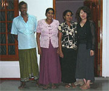
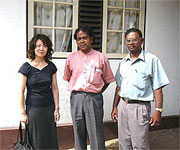
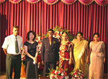
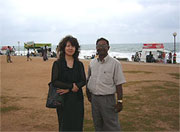

 ホストファミリーとパチリ☆ |
 帰国されてたクマーラ先生に低開発村を案内して頂きました。 |
「Thank you for offrering me this amazing tour. I enjoyed a lot.
今回は、現地の方々と交流できる点、スリランカの生活、文化について直に学べる点、英語が学べる点などから、参加を決めました。
飛行機の到着が深夜でしたので、サンタ氏に会えなかったらどうしようとかご家族の方に迷惑では？と考えたり、あまりにも生活習慣が違いすぎて何もかも嫌になってしまったら・・・？と不安になってましたが、実際は、何の問題もなかったです。
日本食は全く恋しくならなかったので、持っていった梅干は不要でした。
生活習慣は、大きく違いましたが、それを心から楽しむことができました。
井戸水、手で食べる食事、かまどで作る料理など、全てが新鮮で驚きの毎日でした。
ホストファミリーとの生活は、最高でした。ホストファミリーは、日本語や日本の生活についても興味を持ってくれました。
私はよく台所でお父さんとお母さんが食事の支度をするのを見せてもらいましたが、ほとんどのものが自家製で、便利なものがお店に行けば手に入る日本での生活を考えさせられました。
食事の量が多く（すごくすすめられるので・・）、お腹がすいたと思うことはほとんど無かったです。
最初に覚えたシンハラ語が『アティ（もう充分）』でした！
現地でハマッた食べ物に『ウダパ（Wood apple）』という果物があります。
ちょうど旬の時期で、『あなたはラッキーだね』と言われました。
クリーミーでちょっとすっぱいのですが、とてもおいしかったです！
滞在中、思いがけずファミリーの友人の結婚式のパーティに出席する機会がありました。幸せなカップルを見て私も嬉しくなりました。
コロンボで買い物をした時、『スリランカはどう？また来て！』と言われました。
人々が温かくて、表情豊かで、本当にいい国でした。
ガンパハでは、日本人が珍しいのか、よくじーっと見られました・・・
スリランカはイギリス文化の影響を受けており、クリケットが盛んで、英語に関しても米語というよりは、どちらかといえばクイーンズイングリッ シュに近いと思いました。
是非、またスリランカへ行きたいと思います。
今回は、英語の授業がちょっと多く感じたので、自由時間がもう少しあれば、このプログラムをまた利用したいです。
P.S.
虫除けスプレーは、必携です。就寝時は、蚊帳（かや）があったので問題ありませんでしたが、虫除けスプレーをし忘れた足の裏や、首筋など蚊に刺されました。
その他、現地でよく聞かれたのが宗教です。religionという単語と仏教、キリスト教などについて少しは、知識があると良いかと思います。」
 結婚式のパーティです♪ |
 インド洋をバックに撮りました。 |